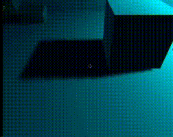

Clouds
Ray marching is a class of rendering methods for 3D computer graphics where rays are traversed iteratively, effectively dividing each ray into smaller ray segments, sampling some function at each step.
i used this method to code interactive clouds that react to light and physically recreates real clouds.
I have gone through many itterations and problems along the way
work in progress
RayMarching-Clouds

Shadow To Object

Turning a shadow into an object
The concept of doing such a thing sounds pretty easy in theory, just simply get all the edges of the shadow, fill it in to make a face and extrude it, thats it!... in theory.
While trying to actually accomplish this effect i ran into many problems, first we have to actually get the edges of the shadow, unity doesnt simply store that as a variable somewhere so we have to calculate it ourslefs!, luckily for a cube, its pretty simple, you just send a ray from the light source to each of the edges of the cube, and detect once it hits a surface that the shadow would ba cast on.